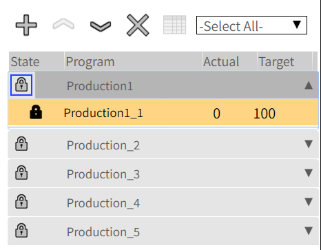
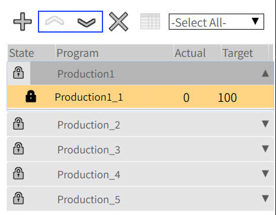
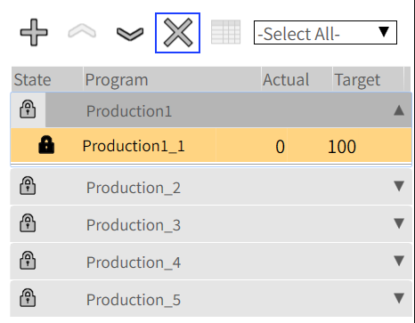

Modification
Lock/Unlock production plan

This function is to lock/unlock production plan package.
-
Once the production plan package be imported, it will be locked as its default state.
-
Select a production plan and click the lock button will unlock the production plan, means this production plan is now as an Active production plan.
-
Once the production plan package be active, all its included programs need to be loaded(as current “Run” be clicked), thus the general information be read, preview drawings be displayed.
-
Lock/Unlock impacts on entire production plan, not allow to set for single program. (In initial phase, not allow the sequence adjustment, so block this access for single program)
-
Multiple production plan package can be imported and unlocked at a same time. But only current running program will be highlighted in dark color.
-
Active production plan can not be deleted immediately, any other operation needs to Lock the production plan first.
-
There will be a variable to indicate the production plan active/inactive state. While the main page be switched to other page (Not in Run production plan), the variable will be False, and while the page returns back to Run production plan, the variable becomes back to previous state.
-
If the machine be restarted, the production plan state should be kept. While get into production plan page, the previous active production plan is still active.
Sequence adjustment
This function is to adjust production plan package priority in the production plan list, thus the processing sequence is changed.
-
Select a production plan, and use this up/down symbol to adjust the sequence.
-
The upper one has the higher priority.
-
Each unlocked production plan will be processed in sequence from top to bottom. (In initial phase, only one production plan can be processed, automated processing one by one could be reached in future)

Delete a Production plan
This function is to delete production plan package in the production plan list.
-
Select a production plan, and use this “X” symbol to delete the production plan package.
-
All this selected package will be deleted, not allow to delete a single program individually.
-
It only removes the production plan in the production plan list, will not delete the split programs in original Program page. So, operator could still use the programs to do single jobs.
